<link rel="import" href="../polymer/polymer.html">
<link rel="import" href="./behaviour.html">

<!--
<h1>flowbased-behaviour</h1>
Connect events from components to functions of other components, to properties or trigger (basic) events  of other components in a declarative way.

<h3>Usage</h3>
```
<link rel="import" href="../../bower_components/flowbased-behaviour/behaviour.html">

```
 - add behaviour to your component **behaviors: [PolymerFlowBasedProgramming,...]**.

 - add a ```@-event-name="connector"``` or  ```@-event-name="((property))"``` to the emmiting component.

 - add a ```ƒ-function-name="connector"``` or ```ƒ-event-name="connector"``` to the receiving component(s).

 - add a ```@-tap="^fire-event"``` to fire a non bubling event.

 - add a ```@-tap="^^fire-bubbling-event"``` to fire a  bubling event.

The contents of **event.detail** will be passed to the receiver function and to the property.


set this._PolymerFlowBasedProgrammingTraceFlow to true to get a plantuml source representation of your element.

<h3>Todo</h3>
 - Include visualization for polymer component wiring (attr="[[value]]" other-attr="{{value}}"
 - make a chrome dev plugin to see the current component wiring
 - make a flowbased programming editor to wire components graphically
 - make Polymer the #1 address for flowbased UI design for the web

<h3>SVG  generated from resulting puml</h3>
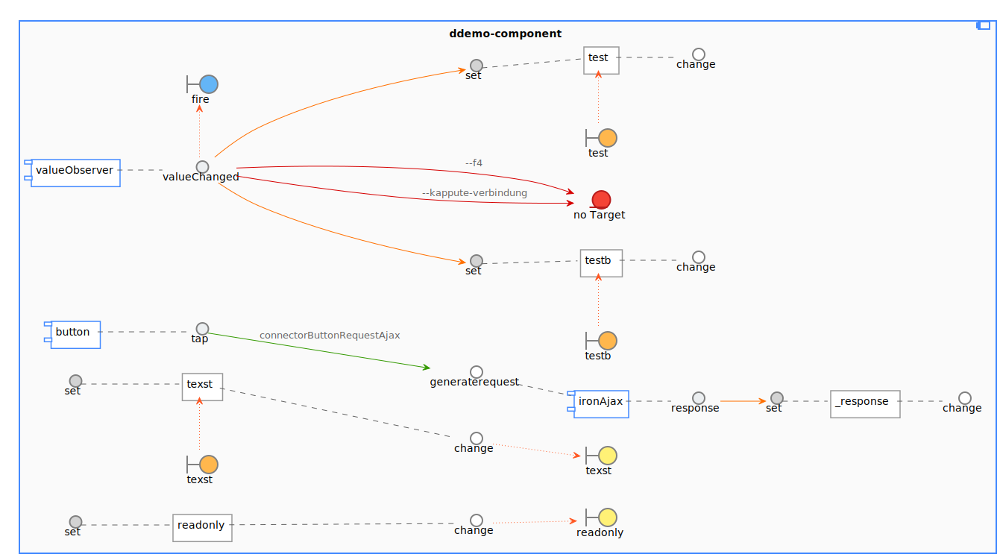


<h3>Legend</h3>
<h4>Properties</h4>
<p><strong>testb</strong> is a property. A property haves set and get interfaces and (if defined in properties:{}) a in- and outbound value (notify, readonly)</p>
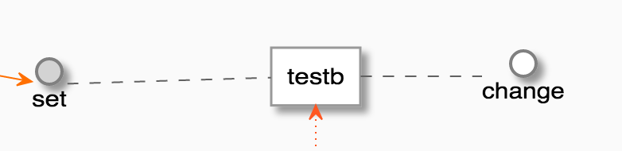
<h4>Component</h4>
<p>iron-ajax is a well known component, only wired interfaces and events of a propertiy are shown.</p>
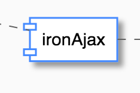
<h4>Non bubbling events</h4>
<p>the blue boundary symbol indicates a non bubbling event. If you assign ^event a non-bubbling event will be fired.</p>
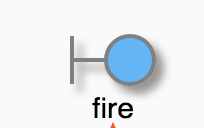
<h4>Bubbling events</h4>
<p>the green boundary symbol indicates a bubbling event. If you assign ^^other-event a bubbling event will be fired.</p>
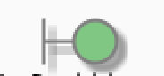
<h4>Inbound value</h4>
<p>the orange boundary symbol indicates inbound value/property</p>
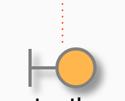
<h4>Outbound value</h4>
<p>the yellow boundary symbol indicates a outbound value/property</p>
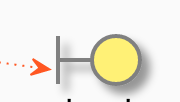

<h4>Interfaces</h4>
<p>Tap is a outgoing interface of the button component. </p>
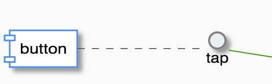

<h4>Wrong wiring</h4>
<p>If you wire something to a non existing traget, thiy symbol will inidicate that you have errors. :-(  </p>
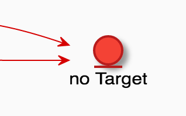

<h4>Green arrow</h4>
<p>If you wire something to a target event or function</p>
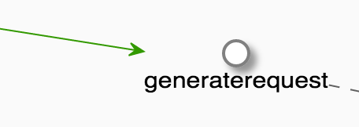

<h4>Orange arrow</h4>
<p>If you wire something to a value, you will see a orange arrow</p>
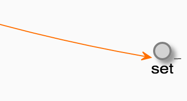

<h4>Wrong wiring</h4>
<p>If you wire something to a non existing traget, thiy symbol will inidicate that you have errors. :-(  </p>


<h3>Generated puml</h3>
Watch the console in the demo.


<h3>Attention</h3>
Keep in mind that the "ƒ" symbol is not a regular "f". Press [alt] + f on mac.

<h3>example</h3>
```
<emmiting-component @-response="((responseFromSomewhere))"></emmiting-component>
<emmiting-component @-response="otherResponse"></emmiting-component>

<receiving-component ƒ-show-data="otherResponse"></receiving-component>
{{responseFromSomewhere}}

```

Exapmple above is aequivalent to following example

```
<emmiting-component id="emmiter" on-response="handleResponseFromSomewhere"></emmiting-component>
<emmiting-component id="emmiterB" on-response="handleOtherResponseFromSomewhere"></emmiting-component>

<receiving-component id="receiver"></receiving-component>
{{responseFromSomewhere}}

Polymer({
    is: 'my-component',
    properties: {
        responseFromSomewhere:{
            type: String,

        }
    },
    handleResponseFromSomewhere:function(event){
        this.set(responseFromSomewhere, event.detail);
    },
    handleOtherResponseFromSomewhere:function(event){
        this.$.receiverB.showData(event.detail);
    }

});

```


@author veith
@demo demo/index.html

-->
<dom-module id="behaviour-doc">

    <template>

        <style>
            :host {
                display: block;
            }
        </style>
    </template>

    <script>

        Polymer({
            is: 'behaviour-doc',
            behaviors: [PolymerFlowBasedProgramming],
            properties: {}

        });
    </script>
</dom-module>
